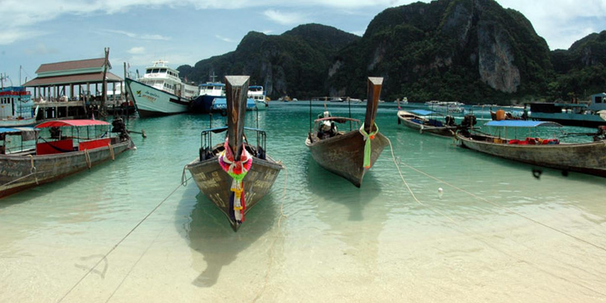
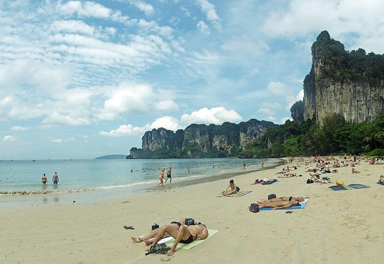
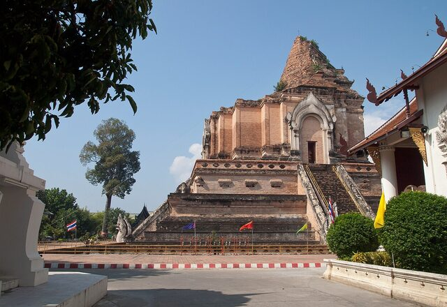
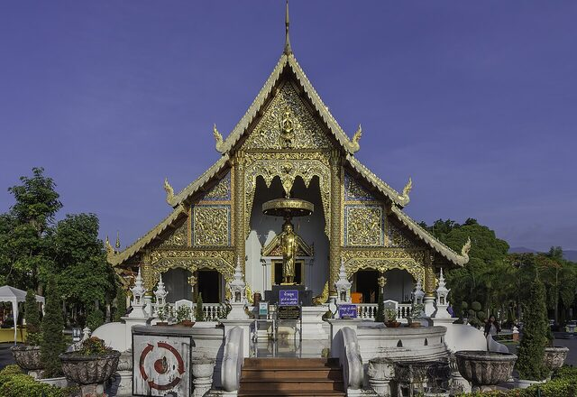
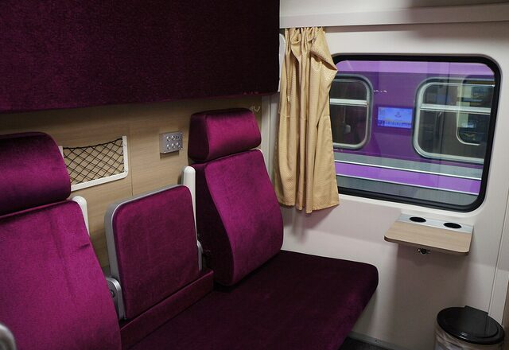
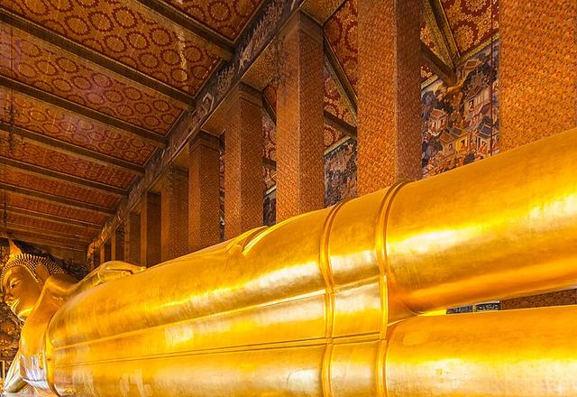
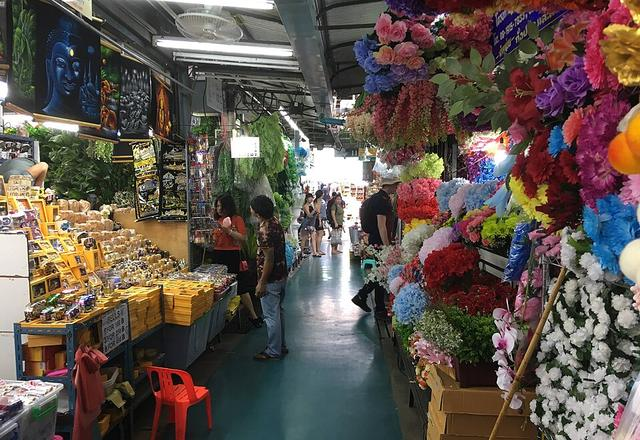
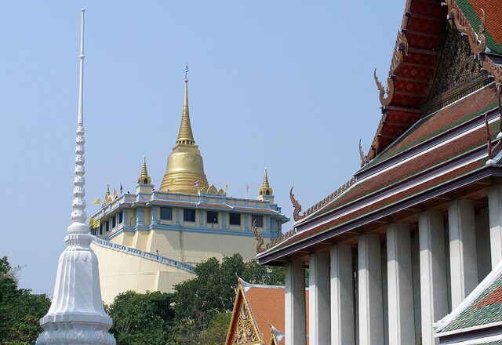
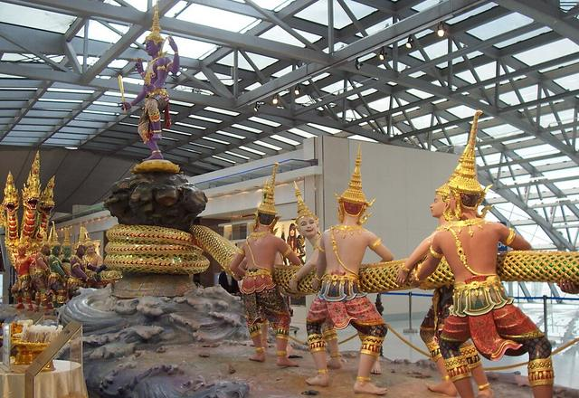

Thailand, 15–25 January
A relaxed, safe, vegetarian-friendly honeymoon for two: a beach and a first scuba dive in Phuket, Tiger Cave Temple and Railay in Krabi, the White Temple in Chiang Rai, a private night train, and Bangkok's palaces and nightlife. Planned with at least 7 hours of sleep every night. You fly out from Mumbai (you're dropped at the airport) and fly home to Mumbai.
Get quotes from travel agencies
An agency can book your flights, hotels, airport pickups and drivers, and give you one number to call if anything goes wrong in Thailand. You keep the free time. Tap Message on WhatsApp to open a chat with a short message already typed: who you are, your dates, the cities and a budget of around ₹1.5–1.8 lakh. You can edit it before sending.
See the message that will be sent
Hi, I'm Shripad Agashe. My wife and I are planning our honeymoon in Thailand, 15 to 23 Jan 2027, flying from Mumbai. We're thinking Phuket, Krabi and Bangkok: some beach time, a beginner scuba dive and heritage sites. We're vegetarian. I'm looking for budget-friendly options, around ₹1.5–1.8 lakh for both of us (a little flexible). Could you please share a quote?
Pune & Maharashtra
Veena World
Customised Holidays team · Chinchwad officeBig Maharashtra brand with an office in Chinchwad. Ask for their customised (not group) Thailand honeymoon desk.
WhatsApp +91 89568 48708Call 1800 22 7979
Kesari Tours
Tailormade desk · many Pune branchesAsk for “Kesari Tailormade” so you get a private trip, not a group tour.
WhatsApp +91 99303 30066Call 1800 266 9080
Parrot Vacations
Viman Nagar, PuneSmall Pune agency offering custom Thailand trips with vegetarian meals and Hindi/Marathi-speaking guides. Few online reviews, so check them carefully.
WhatsApp +91 91136 18706Call +91 91136 18706
All-India
Thomas Cook India
Individual customised tours · Pune branchesLarge, long-established company. Their Pune Camp branch has many good reviews.
WhatsApp +91 88791 42236Call 1800 2099 100
Pickyourtrail
Fully custom, planner-led tripsBuilt for custom trips like yours. Some reviews say hotels were below the promised category, so get hotel names in writing.
WhatsApp +91 63693 02849Call +91 92402 04872
Thailand-based
TripThaiTour
Bangkok · Hindi-speaking guidesBangkok ground operator for Indian travellers. States TAT licence 14/04232. Mostly works with agents, but you can ask for a direct quote.
WhatsApp +66 89 949 6235Call +66 89 949 6235
Explera DMC
Thailand · veg and Jain kitchensThai ground operator for the Indian market, covers Krabi and Bangkok. States TAT licence 14/05119. Mainly B2B, so they may refer you to a partner.
WhatsApp +66 93 656 8090Call +66 93 656 8090
Also worth a call (no WhatsApp listed): SOTC 1800 209 3344. Each WhatsApp number above appears on the agency's own website (checked 18 Nov 2026).
Ask every agency
- The exact hotel names and room type, in writing.
- Who runs the trip on the ground in Thailand, and a 24/7 Thai phone number.
- Which flights are included, and whether checked bags are included.
- Whether pickups and drivers are private (not shared vans).
- The cancellation and change rules, and when payment is due.
- The final price including 5% GST and TCS.
Compare quotes fairly
- Get 3–4 quotes for the same hotels and route.
- Check a quote against the budget below. Paying 10–15% more than doing it yourself is normal for the convenience.
- Pay by card or bank transfer to the company's account, never a personal one.
- On packages, Indian agencies add 5% GST and TCS (2% from April 2026; you can claim TCS back in your tax return).
Our plan
Final: Phuket → ferry to Krabi → fly to Chiang Rai → night train → Bangkok, 15–25 January, for two. Flight prices are real fares from Google Flights (25 Nov 2026); hotels, food and buses are estimates.
Krabi, Chiang Rai and the night train
11 days · 10 nights · 15–25 Jan
Good
- Beach, scuba, Tiger Cave, Railay and the White Temple in one trip
- A private night train with sunrise views; it's also your hotel for one night
- Nights out on Saturday and Sunday, then a lazy Monday before an evening flight
- Reputable, punctual airlines both ways; IndiGo fares include bags
Trade-offs
- ≈ ₹8,400 over the ₹2.3 lakh cap, because of the couples spa
- No Golden Triangle or Ayutthaya
- Lands in Mumbai at 1:20 am; you need the pickup to Pune
Day by day
- Day 1 Fri 15 Jan
🚗 Pune → Mumbai airport · ✈️ IndiGo nonstop 1:15 pm → Phuket 7:15 pm · 🚕 Kata · 🌙 first night out at Ska Bar on the beach - Day 2 Sat 16 Jan
😴 Sleep in · 🛕 Big Buddha 10:45 am – 12:45 pm · 🤿 beginner scuba 1:45 – 5:30 pm · 🌅 Kata sunset - Day 3 Sun 17 Jan
🛕 Wat Chalong 9:30 – 11:30 am · rest · 🏮 Phuket Old Town and Sunday walking street 5 – 8 pm - Day 4 Mon 18 Jan
⛴️ Ferry 8:30 am – 12 pm to Ao Nang · 🏨 Aonang Paradise · rest · 🌅 beach sunset 4:30 – 7 pm - Day 5 Tue 19 Jan
🛕 Tiger Cave Temple 7 – 10 am · rest · 🛶 Railay and Phra Nang Cave Beach 2:15 – 5:15 pm · 🥂 honeymoon dinner - Day 6 Wed 20 Jan
✈️ Nok Air 11:35 am via Bangkok → Chiang Rai 6:45 pm · 🏨 Le Patta · 🌙 Clock Tower and Night Bazaar 8 – 10 pm - Day 7 Thu 21 Jan
🤍 White Temple 8 – 10:30 am · rest · 🖤 Black House 3 – 5 pm · 💙 Blue Temple at dusk 5:20 – 7:20 pm - Day 8 Fri 22 Jan
🚌 Bus 9:30 am → Chiang Mai · 🛕 Wat Chedi Luang and Wat Phra Singh 2:30 – 5 pm · 🚆 night train ≈ 6 pm, private cabin - Day 9 Sat 23 Jan
🚆 Bangkok ≈ 6:30 am · 😴 nap · 🛕 Wat Pho 2:15 – 4:30 pm · ⛴️ 🌅 Wat Arun sunset · 🌙 Chinatown, Above Eleven - Day 10 Sun 24 Jan
😴 Sleep in · 🛍️ Chatuchak 12:15 – 3:15 pm · 💑 couples spa 4:30 – 6:30 pm · 🌙 Jodd Fairs, Khao San Road - Day 11 Mon 25 Jan
👑 Grand Palace 10:45 am – 1:15 pm · ⛰️ Golden Mount 2:45 – 4:45 pm · 💆 massage · ✈️ IndiGo 10:05 pm → Mumbai · 🚗 Pune
Cost for two
| Item | Details | Cost |
|---|---|---|
| Flights, 2 × 20 kg bags | Mumbai → Phuket (IndiGo) ₹29,854 · Krabi → Chiang Rai (Nok Air) ₹14,559 · Bangkok → Mumbai (IndiGo 10:05 pm, 25 Jan) ₹35,590 · Nok bags ≈ ₹3,900 (IndiGo Saver includes bags) | ₹83,900 |
| Ferry Phuket → Krabi | ₹4,000 | |
| Bus + night train | Chiang Rai → Chiang Mai bus · private 1st-class 2-bed cabin Chiang Mai → Bangkok | ₹10,100 |
| Hotels, 9 nights | Sugar Marina Resort – Art, Kata 3 × ₹4,500 · Aonang Paradise Resort 2 × ₹3,000 · Le Patta Hotel Chiang Rai 2 × ₹3,000 · Holiday Inn Express Sukhumvit 11 2 × ₹5,000 · night 8 is on the train | ₹35,500 |
| Vegetarian food | 11 days | ₹26,500 |
| Beginner scuba for two | Pool practice + shallow Kata beach dive | ₹13,000 |
| Grab, Skytrain, airport rides | Incl. late-night rides | ₹17,000 |
| Temples, boats | Incl. Chiang Mai old city | ₹8,000 |
| Bangkok nights out | Saturday and Sunday · ≈ 2,700 THB a night | ₹14,000 |
| Insurance, eSIM, tips | ₹8,000 | |
| 💑 Couples spa | 2 hours side by side, Bangkok · ≈ 4,000 THB for two | ₹10,400 |
| Buffer | ₹8,000 | |
| Total | ≈ ₹8,400 over the ₹2.3 lakh cap · shopping not included | ₹2,38,400 |
Nicer flight home: THAI Airways nonstop 6:55 pm (₹46,816, meals and bags included) adds ≈ ₹10,800. Skip the Sunday night out and take 2nd-class train bunks to fit it under the cap.
Book everything
Everything to book, in trip order. Prices are for two. Flight links open Google Flights with the date filled in; click the right flight, then book on the airline's own site with names exactly as on your passports. Hotel links open Booking.com with your dates; pick a refundable rate with breakfast.
| What | When | For two | Book |
|---|---|---|---|
| ✈️ IndiGo Mumbai → Phuket | Fri 15 Jan · 1:15 pm nonstop · pick Saver (bags included) | ₹29,854 | Google Flights ↗ IndiGo ↗ |
| 🏨 Sugar Marina Resort – Art, Kata | 15–18 Jan · 3 nights | ≈ ₹13,500 | Booking.com ↗ |
| 🤿 Beginner scuba, Kata Beach | Sat 16 Jan afternoon · shore dive, pool practice first | ≈ ₹13,000 | Book ↗ |
| ⛴️ Ferry Phuket → Ao Nang | Mon 18 Jan · morning, hotel pickup included | ≈ ₹4,000 | 12Go ↗ |
| 🏨 Aonang Paradise Resort | 18–20 Jan · 2 nights | ≈ ₹6,000 | Booking.com ↗ |
| ✈️ Nok Air Krabi → Chiang Rai | Wed 20 Jan · 11:35 am via Bangkok · add 20 kg bag each | ₹14,559 + bags ≈ ₹3,900 | Google Flights ↗ Nok Air ↗ |
| 🏨 Le Patta Hotel Chiang Rai | 20–22 Jan · 2 nights | ≈ ₹6,000 | Booking.com ↗ |
| 🚌 Bus Chiang Rai → Chiang Mai | Fri 22 Jan · 9:30 am, about 3 h · Green Bus | ≈ ₹1,500 | 12Go ↗ Green Bus ↗ |
| 🚆 Night train Chiang Mai → Bangkok | Fri 22 Jan · ≈ 6 pm · private 1st-class 2-bed cabin | ≈ ₹8,600 | SRT D-Ticket ↗ 12Go ↗ |
| 🏨 Holiday Inn Express Sukhumvit 11 | 23–25 Jan · 2 nights | ≈ ₹10,000 | Booking.com ↗ |
| 💑 Couples spa, Bangkok | Sun 24 Jan · 4:30 pm · book a day ahead | ≈ ₹10,400 | Find a spa ↗ |
| ✈️ IndiGo Bangkok → Mumbai | Mon 25 Jan · 10:05 pm nonstop, lands 1:20 am · pick Saver | ₹35,590 | Google Flights ↗ IndiGo ↗ |
Flight prices from Google Flights on 25 Nov 2026, for 2 adults with taxes; they change daily. Ferry, bus and train prices are from booking sites. 12Go is a reseller; the official train site is SRT D-Ticket.
Baggage: 20 kg each on every flight
The cost includes one 20 kg checked bag each plus a 7 kg cabin bag each on every flight. Low-cost airlines only include the cabin bag, so add the checked bags while booking: it's much cheaper than paying at the airport.
| Flight | What the fare includes | What to choose when booking | Extra for two |
|---|---|---|---|
| IndiGo Mumbai → Phuket and IndiGo Bangkok → Mumbai | International Saver fare: checked bag included (20–30 kg) + 7 kg cabin | Pick Saver, not “Lite”. Lite has no checked bag | ₹0 |
| Air India Express Bangkok → Pune | Xpress Lite: cabin bag only · Xpress Value: 20 kg checked + 7 kg cabin | Pick Xpress Value | ≈ ₹3,000 |
| Thai VietJet Phuket → Chiang Rai | Eco fare: 7 kg cabin only | Add 20 kg for each of you at booking (≈ 400–600 THB each) | ≈ ₹3,100 |
| Nok Air Krabi → Chiang Rai (via Bangkok) | Nok Lite: 7 kg cabin only · Nok X-tra: 15 kg domestic | Nok Lite + 20 kg each (≈ 750 THB each). Book both legs on one ticket so the bags go straight through | ≈ ₹3,900 |
| Ferry, night train and VIP bus | One large bag each is normal | Nothing extra | ₹0 |
Bags, for two
- IndiGo both ways: ₹0 extra (Saver includes bags).
- Nok Air: ≈ ₹3,900, already inside the “Flights” line.
Packing tips
- Weigh bags at home: under 20 kg checked, under 7 kg cabin.
- Leave 3–4 kg spare for shopping, or buy an extra 5 kg online before the flight home.
- Thai domestic flights weigh cabin bags; keep valuables and medicines in them.
- Power banks go in the cabin bag only.
Baggage rules and add-on prices come from airline pages and travel guides that don't always agree; the booking page shows the exact price for your fare. Checked 24 Nov 2026.
Scuba diving: simple and shallow
Beginner scuba at Kata Beach (Day 2)
- Made for non-swimmers. You start in a pool where you can stand up any time, and practise breathing with the instructor.
- Then you walk into the sea from Kata Beach and dive to just 5–6 m for about 30–40 minutes, with the instructor holding on to you.
- At that depth there are no stops on the way up: you come up slowly with your instructor. No boat, no jumping in from a deck.
- Half a day (8:30 am or 1 pm start). ≈ 2,500 THB each, about ₹13,000 for two.
When you book
- Say you can't swim and ask for pool training first and a maximum depth of 6 m.
- Ask for a private instructor: 1 per person, or 1 for the two of you.
- Good PADI 5 Star centres near Kata: Kata Beach Reef (max 2 divers per instructor), Blue Dive Center, Love Diving Phuket. Phuket Dive Tours runs this exact pool + beach format.
- You fill in a medical form: asthma, heart or ear problems or a cold rule it out. Buy insurance that covers scuba.
- There are 4 days between the dive and the next flight.
Hour-by-hour
The full timed schedule. Every place gets 2–3 hours, so you never have to rush. Every cab, boat, bus, train and flight is listed with how long it takes, and every night has at least 7 hours of sleep.
🚕 cab · 🚗 car · ⛴️ ferry · 🛶 longtail boat · ✈️ flight · 🚌 bus · 🚆 train · 🚇 Skytrain · 🚶 walk · 🏨 hotel · 😴 sleep · 🍽️ meal · 🛕 temple · 🌙 night out · 🧳 bags
Every "Photos ↗" link opens more photos of that place in Google Images.
🏖️ Phuket · Kata Beach
3 nights · 🏨 Sugar Marina Resort – Art, KataDay 1 Fri 15 Jan · Fly Mumbai → Phuket, first night out
😴 8 h · 🏨 Sugar Marina Resort
Day 2 Sat 16 Jan · Big Buddha, beginner scuba
😴 9.5 h · 🏨 Sugar Marina Resort

Day 3 Sun 17 Jan · Wat Chalong, Phuket Old Town
😴 8 h · 🏨 Sugar Marina Resort

🌴 Krabi · Ao Nang
2 nights · 🏨 Aonang Paradise ResortDay 4 Mon 18 Jan · Ferry to Ao Nang
😴 8 h · 🏨 Aonang Paradise Resort
Day 5 Tue 19 Jan · Tiger Cave Temple, Railay
😴 9.5 h · 🏨 Aonang Paradise Resort


Day 6 Wed 20 Jan · Fly to Chiang Rai, Clock Tower at night
😴 8 h · 🏨 Le Patta Hotel
🛕 Chiang Rai · Chiang Mai
2 nights in Chiang Rai · 🏨 Le Patta Hotel, Chiang Rai, then the night trainDay 7 Thu 21 Jan · White Temple, Black House, Blue Temple
😴 9 h · 🏨 Le Patta Hotel


Day 8 Fri 22 Jan · Bus to Chiang Mai, old city temples, night train
😴 8 h (train) · 🚆 Night train, private cabin


🌃 Bangkok · Sukhumvit
2 nights · 🏨 Holiday Inn Express Sukhumvit 11Day 9 Sat 23 Jan · Arrive by train, Wat Pho and Wat Arun, night out 1
😴 8 h · 🏨 Holiday Inn Express

Day 10 Sun 24 Jan · Chatuchak market, couples spa, night out 2
😴 7 h · 🏨 Holiday Inn Express
Day 11 Mon 25 Jan · Grand Palace, Golden Mount, fly home


Extras, only if money is left
Not in the ₹2.38 lakh. The couples spa and scuba are already in the plan.
| Extra | When it fits | For two | Book |
|---|---|---|---|
| 🛶 Phang Nga Bay sea caves by canoe | Phuket · Sun 17 Jan, a full day instead of Wat Chalong | ≈ ₹10,400 | Find tours ↗ |
| 🚢 Chao Phraya dinner cruise | Bangkok · Sun 24 Jan evening, instead of Jodd Fairs | ≈ ₹7,800 | Find cruises ↗ |
| 🌊 Jet ski, 30 minutes | Phuket · book through your hotel and photograph the jet ski first (damage-claim scam) | ≈ ₹7,800 | Find ↗ |
Bangkok after dark
Where to go
- Rooftop bars: Above Eleven (Soi 11, near the hotel), Octave (Thong Lo), or the famous Sky Bar (pricier). Mocktails are on every menu.
- Chinatown (Yaowarat): neon, crowds and street food, best 8–11 pm.
- Jodd Fairs (Rama 9): a huge night market with food stalls and bars.
- Khao San Road: a street party with music from every bar.
- RCA (Royal City Avenue): big clubs, busiest Thursday to Saturday until about 2–3 am.
Stay safe at night
- Use Grab to get home; skip street tuk-tuks after midnight.
- Carry your passport or a photo of it: clubs check ID.
- Watch your drinks, and keep phones in front pockets in crowds.
- Ignore touts offering “shows”; Nana Plaza and Soi Cowboy are red-light areas.
- Bars stop serving alcohol on some Buddhist holidays; check before you go.
Where you'll stay
Room for two with breakfast, January estimates including the ~17% service charge and VAT. These nightly rates are the ones used in the cost. Booking links are in “Book everything”.
Sugar Marina Resort – Art, Kata
≈ ₹4,500 / nightShort walk to Kata Beach; dive shops pick up here for the beginner scuba.
Aonang Paradise Resort
≈ ₹3,000 / nightKunal's pick: “the best stay” of his trip. About 10 minutes' walk to Ao Nang Beach, pool, restaurant. Rated 8.4 on Expedia, 8.0 on Agoda. His booking was non-refundable, so look for a refundable rate.
Le Patta Hotel Chiang Rai
≈ ₹3,000 / nightCentral, walking distance to the Clock Tower and Night Bazaar.
Holiday Inn Express Sukhumvit 11
≈ ₹5,000 / nightOn Soi 11: Above Eleven rooftop and the bars are a short walk, so getting back late is easy. Nana Plaza nearby is a red-light area; skip it.
Places you'll see
More photos: the "Photos ↗" links in the hour-by-hour plan.



Vegetarian food guide
Say this
- Gin jay กินเจ: I eat "jay" (vegan: no meat, egg or fish sauce, often no onion or garlic)
- Mai sai nuea sat ไม่ใส่เนื้อสัตว์: no meat
- Mai sai nam pla ไม่ใส่น้ำปลา: no fish sauce
- Mai sai khai ไม่ใส่ไข่: no egg
- Mai phet ไม่เผ็ด: not spicy
Look for yellow flags with red Thai letters (เจ). They mark vegan "jay" food stalls.
Safe orders
- Pad pak ruam: stir-fried mixed vegetables
- Pineapple or vegetable fried rice (say no egg if needed)
- Pad Thai jay: tofu, no fish sauce, no egg
- Mango sticky rice, coconut ice cream, fresh fruit
Apps: HappyCow (veg restaurants near you), Google Translate with Thai downloaded for offline use, Grab (taxis and food delivery).
Money
US dollar account
- Thai money changers such as SuperRich and Vasu give very good rates for USD cash. Bring clean, undamaged $100 or $50 notes.
- A US debit card works well at ATMs if your bank charges no foreign transaction fee. Thai ATMs charge ≈ 220 THB per withdrawal, so take out larger amounts less often.
INR side
- A forex card or a zero-markup credit card works for hotels and malls. Normal Indian cards add about 3.5% plus GST on foreign payments.
- Agency packages add 5% GST and 2% TCS (from April 2026). TCS is not a cost: you claim it back in your tax return.
This is general travel-money information, not financial advice.
Booking checklist
Ticks are saved in this browser only.
Now · by 30 Nov 2026
By 15 Dec 2026
Early January 2027
12–14 Jan 2027
Packing & safety
Pack
- Light cotton clothes, swimwear, a cover-up
- One modest outfit each for temples (shoulders and knees covered)
- Reef-safe sunscreen, sunglasses, a hat
- Waterproof phone pouch, flip-flops, a light dry bag
- Thai sockets take Indian two-pin plugs; a universal adapter is safer
- Basic medicines (motion sickness tablets for boats)
Stay safe
- Use Grab or Bolt instead of street tuk-tuks.
- Don't rent scooters without an International Driving Permit. Insurance won't cover accidents.
- Skip jet-ski rentals, which are a common damage scam.
- Swim only where there are flags and lifeguards.
- Keep passports in the hotel safe and carry copies.
| Emergency | Number |
|---|---|
| Tourist Police (speaks English) | 1155 |
| Ambulance | 1669 |
| Embassy of India, Bangkok | +66 2 258 0300 |
Photo credits
Photos from Wikimedia Commons, cropped and resized. Licences: CC BY, CC BY-SA, CC0 or public domain.
Airport sculpture: photo by Kurun (talk), CC BY-SA 3.0
Ao Nang Beach: photo by kallerna, CC BY-SA 3.0
Big Buddha: photo by Subhrajyoti07, CC BY-SA 4.0
Black House (Baan Dam): photo by Szwendam się, CC BY-SA 4.0
Blue Temple: photo by Chainwit., CC BY-SA 4.0
Chatuchak Market: photo by Christophe95, CC BY-SA 4.0
Chiang Rai Clock Tower: photo by Index Librorum Permissorum, CC0
Discover Scuba: photo by Weldon Kennedy from London, UK, CC BY 2.0
Erawan Shrine: photo by Mr.Peerapong Prasutr, CC BY-SA 4.0
Golden Triangle, Mekong: photo by CEphoto, Uwe Aranas, CC BY-SA 3.0
Grand Palace: photo by Original image: Ninara from Helsinki, Finland. Edit: TSP, CC BY 4.0
Kata Beach: photo by ADwarf, Public domain
Khon masked dance: photo by Saerin, CC BY-SA 3.0
Palace murals: photo by Jorge Láscar from Australia, CC BY 2.0
Phra Nang Cave Beach: photo by kallerna, CC BY-SA 3.0
Phuket Old Town: photo by Christophe95, CC BY-SA 4.0
Railay Beach: photo by kallerna, CC BY-SA 3.0
Sri Maha Mariamman: photo by Adam Jones, CC BY-SA 2.0
Tiger Cave Temple: photo by Stefan Fussan, CC BY-SA 4.0
Top banner: photo by Don Ramey Logan, CC BY 3.0
Wat Arun: photo by Diego Delso, CC BY-SA 3.0
Wat Chaiwatthanaram: photo by JJ Harrison (https://www.jjharrison.com.au/), CC BY-SA 3.0
Wat Chalong: photo by CEphoto, Uwe Aranas, CC BY-SA 4.0
Wat Huay Pla Kang: photo by Chainwit., CC BY-SA 4.0
Wat Mahathat, Ayutthaya: photo by No(0)GoodNamesLeft, CC BY-SA 4.0
Wat Pa Sak, Chiang Saen: photo by Chainwit., CC BY 4.0
Wat Pho: photo by Diego Delso, CC BY-SA 3.0
Wat Phra Si Sanphet: photo by This Photo was taken by Supanut Arunoprayote. Feel free to use any of, CC BY 4.0
White Temple (Wat Rong Khun): photo by Chainwit., CC BY 4.0
Golden Mount (Wat Saket): photo by Vyacheslav Argenberg, CC BY 4.0
Night train cabin: photo by MNXANL, CC BY-SA 4.0
Wat Chedi Luang: photo by Vyacheslav Argenberg, CC BY 4.0
Wat Phra Singh: photo by Stefan Fussan, CC BY-SA 3.0